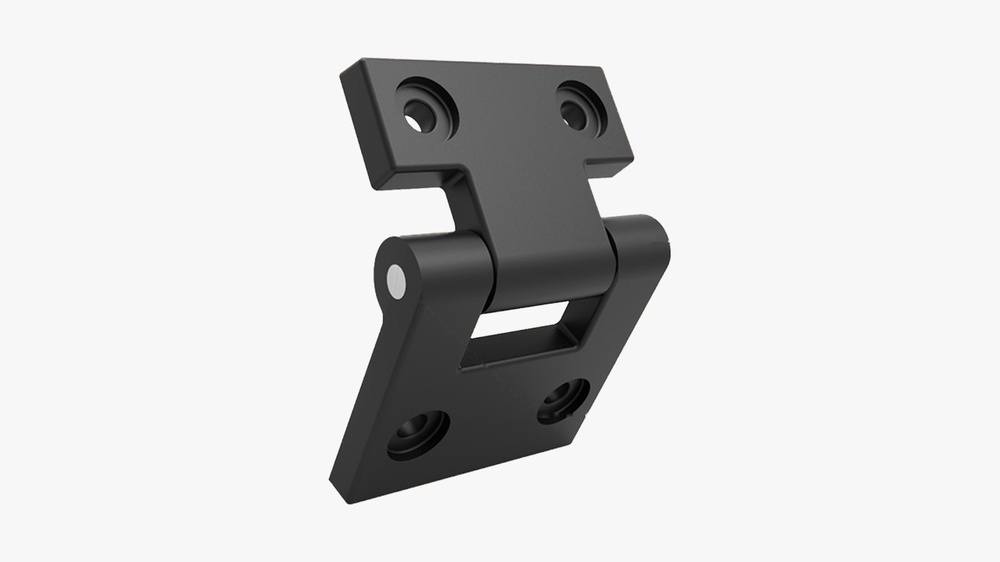
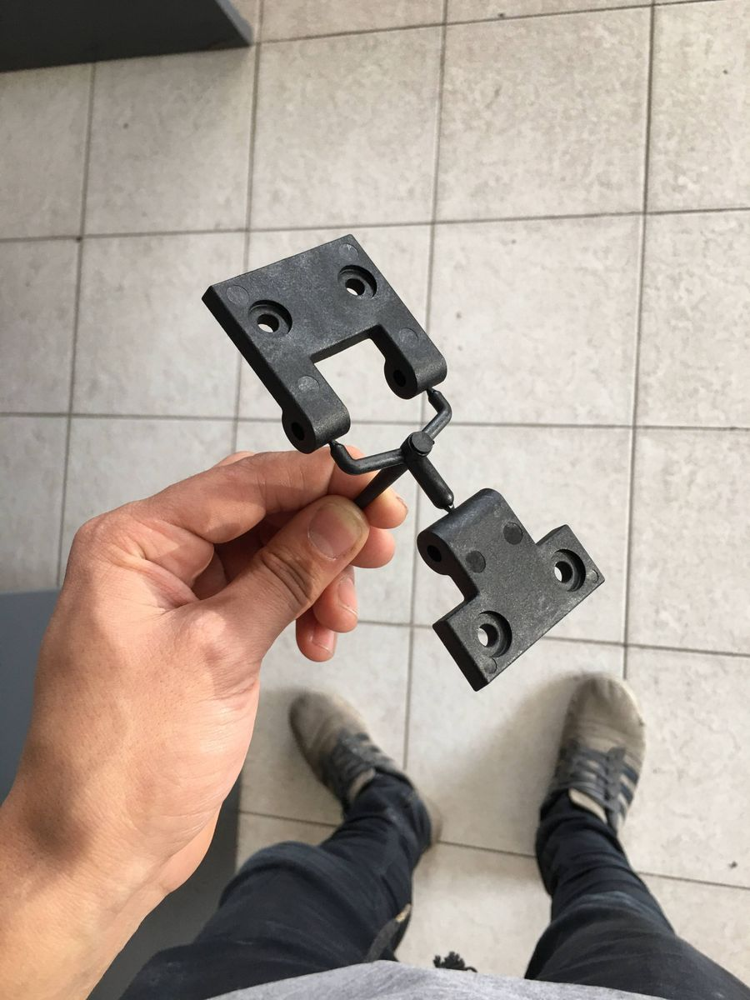
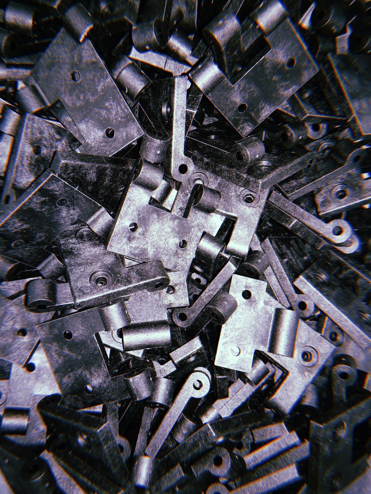
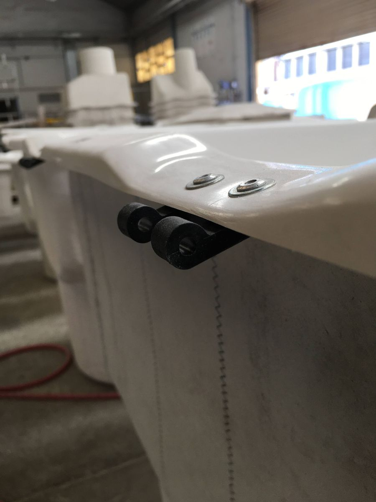
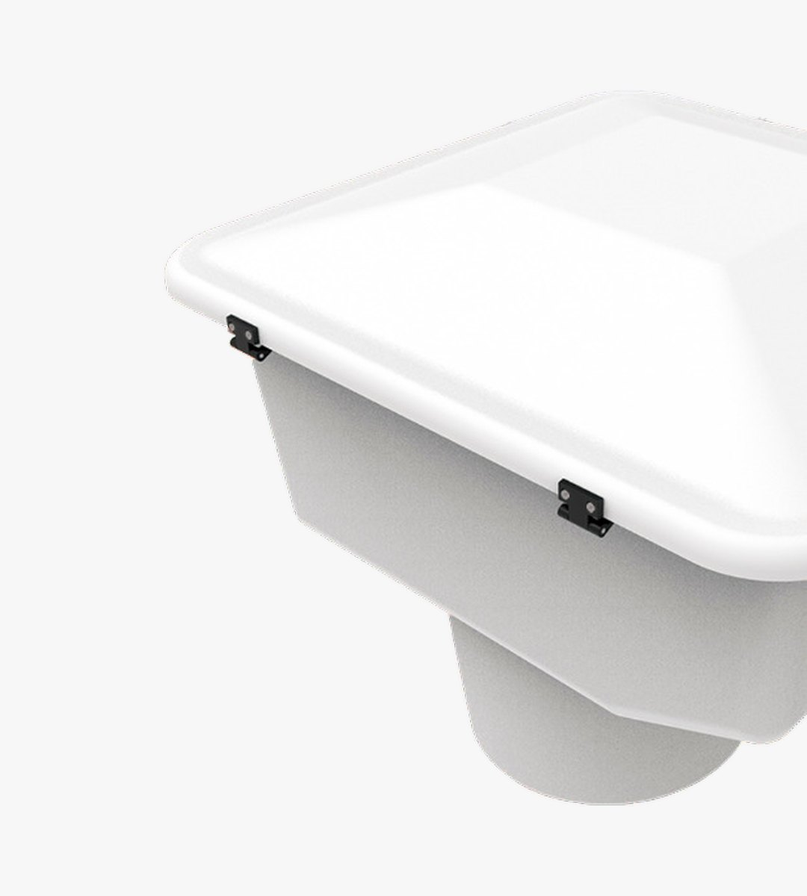
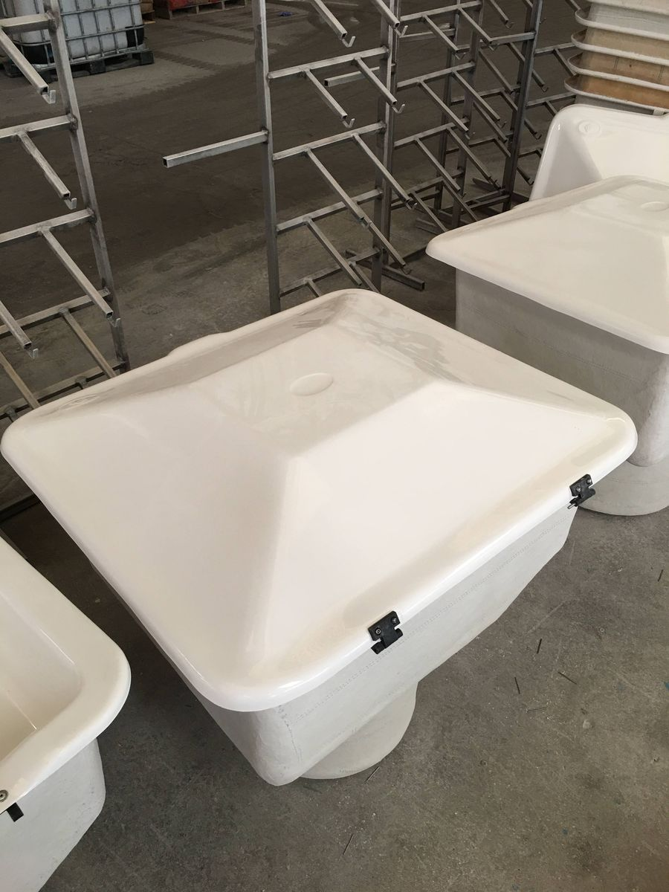
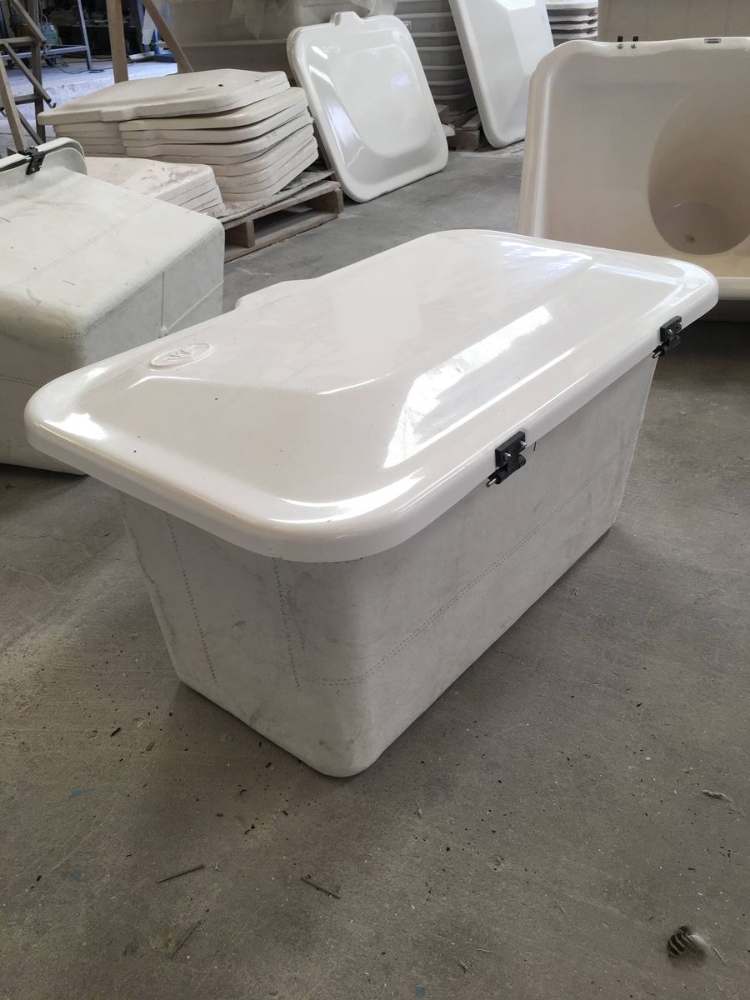

Moldes y composites · MoldearMolds and composites · Moldear
Bisagra para casillasHinge for equipment housings
Bisagra para las casillas que fabrica Moldear, diseñada para inyectarse en poliamida reforzada con fibra de vidrio. Un único modelo es compatible con los cinco modelos de casillas existentes en la empresa.
Hinge for the housings Moldear manufactures, designed to be injection molded in glass-fiber-reinforced polyamide. A single model fits all five housing models the company produces.
01
Pieza inyectadaInjection-molded part



02
En las casillasOn the housings


